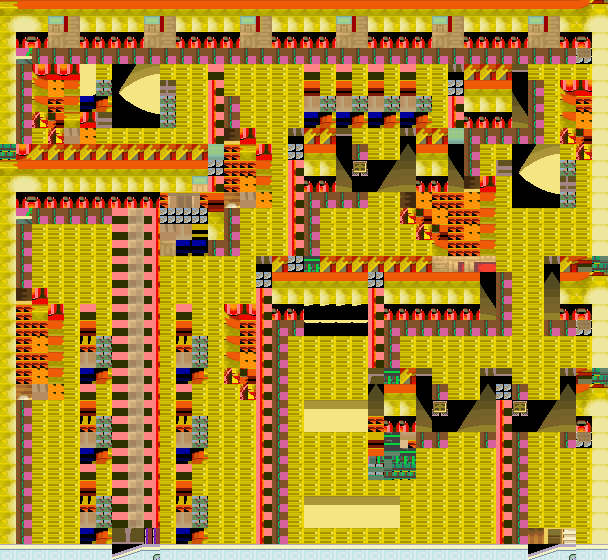

离洞绳
又长又结实的绳子。
获取：训练师之塔·商店 ／ 尼比市·商店 ／ 华蓝市·商店 ／ 紫苑镇·商店 ／ 红莲岛·商店 ／ 山吹市·商店 ／ 烟墨市·商店 ／ 石英高原·商店 ／ …等 28 处
用途
又长又结实的绳子。 能够从洞窟和迷宫中脱出。
标价 1000 口袋：道具
获取方式
购买
- 训练师之塔（区域179） · 标价 1000 · 地图｜静态图 · 触发条件待补
- 尼比市（区域90） · 标价 1000 · 地图｜静态图 · 触发条件待补
- 华蓝市（区域91） · 标价 1000 · 地图｜静态图 · 触发条件待补
- 紫苑镇（区域92） · 标价 1000 · 地图｜静态图 · 触发条件待补
- 红莲岛（区域96） · 标价 1000 · 地图｜静态图 · 触发条件待补
- 山吹市（区域98） · 标价 1000 · 地图｜静态图 · 触发条件待补
- 烟墨市（区域152） · 标价 1000 · 地图｜静态图 · 触发条件待补
- 石英高原（区域97） · 标价 1000 · 地图｜静态图 · 触发条件待补
- 吉野市（区域144） · 标价 1000 · 地图｜静态图 · 触发条件待补
- 桔梗市（区域145） · 标价 1000 · 地图｜静态图 · 触发条件待补
- 桧皮镇（区域146） · 标价 1000 · 地图｜静态图 · 触发条件待补
- 缘朱市（区域148） · 标价 1000 · 地图｜静态图 · 触发条件待补
- 浅葱市（区域149） · 标价 1000 · 地图｜静态图 · 触发条件待补
- 烟墨市（区域152） · 标价 1000 · 地图｜静态图 · 触发条件待补
- 石英高原（区域97） · 标价 1000 · 地图｜静态图 · 触发条件待补
- 吉野市（区域144） · 标价 1000 · 地图｜静态图 · 触发条件待补
- 桔梗市（区域145） · 标价 1000 · 地图｜静态图 · 触发条件待补
- 桧皮镇（区域146） · 标价 1000 · 地图｜静态图 · 触发条件待补
- 缘朱市（区域148） · 标价 1000 · 地图｜静态图 · 触发条件待补
- 浅葱市（区域149） · 标价 1000 · 地图｜静态图 · 触发条件待补
- 烟墨市（区域152） · 标价 1000 · 地图｜静态图 · 触发条件待补
- 石英高原（区域97） · 标价 1000 · 地图｜静态图 · 触发条件待补
- 吉野市（区域144） · 标价 1000 · 地图｜静态图 · 触发条件待补
- 桔梗市（区域145） · 标价 1000 · 地图｜静态图 · 触发条件待补
- 桧皮镇（区域146） · 标价 1000 · 地图｜静态图 · 触发条件待补
- 缘朱市（区域148） · 标价 1000 · 地图｜静态图 · 触发条件待补
- 浅葱市（区域149） · 标价 1000 · 地图｜静态图 · 触发条件待补
- 烟墨市（区域152） · 标价 1000 · 地图｜静态图 · 触发条件待补
- 石英高原（区域97） · 标价 1000 · 地图｜静态图 · 触发条件待补
- 吉野市（区域144） · 标价 1000 · 地图｜静态图 · 触发条件待补
- 桔梗市（区域145） · 标价 1000 · 地图｜静态图 · 触发条件待补
- 桧皮镇（区域146） · 标价 1000 · 地图｜静态图 · 触发条件待补
- 缘朱市（区域148） · 标价 1000 · 地图｜静态图 · 触发条件待补
- 浅葱市（区域149） · 标价 1000 · 地图｜静态图 · 触发条件待补
- 烟墨市（区域152） · 标价 1000 · 地图｜静态图 · 触发条件待补
- 石英高原（区域97） · 标价 1000 · 地图｜静态图 · 触发条件待补
- 吉野市（区域144） · 标价 1000 · 地图｜静态图 · 触发条件待补
- 桔梗市（区域145） · 标价 1000 · 地图｜静态图 · 触发条件待补
- 桧皮镇（区域146） · 标价 1000 · 地图｜静态图 · 触发条件待补
- 缘朱市（区域148） · 标价 1000 · 地图｜静态图 · 触发条件待补
- 浅葱市（区域149） · 标价 1000 · 地图｜静态图 · 触发条件待补
- 烟墨市（区域152） · 标价 1000 · 地图｜静态图 · 触发条件待补
- 石英高原（区域97） · 标价 1000 · 地图｜静态图 · 触发条件待补
- 吉野市（区域144） · 标价 1000 · 地图｜静态图 · 触发条件待补
- 桔梗市（区域145） · 标价 1000 · 地图｜静态图 · 触发条件待补
- 桧皮镇（区域146） · 标价 1000 · 地图｜静态图 · 触发条件待补
- 缘朱市（区域148） · 标价 1000 · 地图｜静态图 · 触发条件待补
- 浅葱市（区域149） · 标价 1000 · 地图｜静态图 · 触发条件待补
- 烟墨市（区域152） · 标价 1000 · 地图｜静态图 · 触发条件待补
- 石英高原（区域97） · 标价 1000 · 地图｜静态图 · 触发条件待补
- 吉野市（区域144） · 标价 1000 · 地图｜静态图 · 触发条件待补
- 桔梗市（区域145） · 标价 1000 · 地图｜静态图 · 触发条件待补
- 桧皮镇（区域146） · 标价 1000 · 地图｜静态图 · 触发条件待补
- 缘朱市（区域148） · 标价 1000 · 地图｜静态图 · 触发条件待补
- 浅葱市（区域149） · 标价 1000 · 地图｜静态图 · 触发条件待补
- 桧皮镇（区域146） · 标价 1000 · 地图｜静态图 · 触发条件待补
- 城都矿山（区域214） · 标价 1000 · 地图｜静态图 · 触发条件待补
- 满金市（区域147） · 标价 1000 · 地图｜静态图 · 触发条件待补
- 满金市（区域147） · 标价 1000 · 地图｜静态图 · 触发条件待补
- 满金市（区域147） · 标价 1000 · 地图｜静态图 · 触发条件待补
- 满金市（区域147） · 标价 1000 · 地图｜静态图 · 触发条件待补
- 满金市（区域147） · 标价 1000 · 地图｜静态图 · 触发条件待补
- 满金市（区域147） · 标价 1000 · 地图｜静态图 · 触发条件待补
- 满金市（区域147） · 标价 1000 · 地图｜静态图 · 触发条件待补
地面隐藏
人物剧情
- 呆呆兽之井（区域127） · (44,21) · 与坐标处人物交互 · 数量 1 · 地图｜静态图 · 触发条件待补
- 火箭队基地（区域133） · (5,16) · 与坐标处人物交互 · 数量 1 · 地图 · 触发条件待补
- 阿露福遗迹（区域134） · (33,7) · 与坐标处人物交互 · 数量 1 · 地图｜静态图 · 触发条件待补
- 桐树林（区域182） · (12,24) · 与坐标处人物交互 · 数量 1 · 地图｜静态图 · 触发条件待补 · 相同来源 2 条
- 铃铛塔（区域135） · (22,6) · 与坐标处人物交互 · 数量 1 · 地图｜静态图 · 触发条件待补 · 相同来源 2 条
- 岩山隧道（区域138） · (22,22) · 与坐标处人物交互 · 数量 1 · 地图｜静态图 · 触发条件待补
- 铃铛塔（区域135） · (2,15) · 与坐标处人物交互 · 数量 1 · 地图｜静态图 · 触发条件待补
- 喇叭芽之塔（区域140） · (16,3) · 与坐标处人物交互 · 数量 1 · 地图｜静态图 · 触发条件待补
- 擂钵山（区域99） · (48,40) · 与坐标处人物交互 · 数量 1 · 地图｜静态图 · 触发条件待补
- 擂钵山（区域99） · (42,7) · 与坐标处人物交互 · 数量 1 · 地图｜静态图 · 触发条件待补
- 漩涡岛（区域176） · (28,37) · 与坐标处人物交互 · 数量 1 · 地图｜静态图 · 触发条件待补
- 城都矿山（区域214） · (22,9) · 与坐标处人物交互 · 数量 1 · 地图｜静态图 · 触发条件待补
数据来源
- 来源文档：out/items.json（
/85） - 表索引 index 0085；内嵌 itemId 85；口袋 ITEMS (id=1)；type 2；hold_effect 0/0；importance 0；unk19 0
- 获取来源文档：encounters_research/out/shops.json、maps_research/out/events/events.json、maps_research/out/scripts/scripts.json
- 获取记录 ID：
shop:081649A8:7:2:10、shop:0816A6F6:6:6:3、shop:0816ACC6:7:7:7、shop:0816B381:7:8:5、shop:0816EA38:5:12:7、shop:0816EFCB:4:14:5、shop:089C7965:15:31:2、shop:089C7965:15:34:3、shop:089C7965:15:45:1、shop:089C7965:15:46:3、shop:089C7965:15:47:4、shop:089C7965:15:48:7、shop:089C7965:15:49:11、shop:089C7970:14:31:2、shop:089C7970:14:34:3、shop:089C7970:14:45:1、shop:089C7970:14:46:3、shop:089C7970:14:47:4、shop:089C7970:14:48:7、shop:089C7970:14:49:11、shop:089C797B:13:31:2、shop:089C797B:13:34:3、shop:089C797B:13:45:1、shop:089C797B:13:46:3、shop:089C797B:13:47:4、shop:089C797B:13:48:7、shop:089C797B:13:49:11、shop:089C7986:13:31:2、shop:089C7986:13:34:3、shop:089C7986:13:45:1、shop:089C7986:13:46:3、shop:089C7986:13:47:4、shop:089C7986:13:48:7、shop:089C7986:13:49:11、shop:089C7991:10:31:2、shop:089C7991:10:34:3、shop:089C7991:10:45:1、shop:089C7991:10:46:3、shop:089C7991:10:47:4、shop:089C7991:10:48:7、shop:089C7991:10:49:11、shop:089C799C:10:31:2、shop:089C799C:10:34:3、shop:089C799C:10:45:1、shop:089C799C:10:46:3、shop:089C799C:10:47:4、shop:089C799C:10:48:7、shop:089C799C:10:49:11、shop:089C79A7:9:31:2、shop:089C79A7:9:34:3、shop:089C79A7:9:45:1、shop:089C79A7:9:46:3、shop:089C79A7:9:47:4、shop:089C79A7:9:48:7、shop:089C79A7:9:49:11、shop:08171CC4:6:35:7、shop:08171E7C:5:37:4、shop:089EB937:15:50:16、shop:089EB942:14:50:16、shop:089EB94D:13:50:16、shop:089EB958:13:50:16、shop:089EB963:10:50:16、shop:089EB96E:10:50:16、shop:089EB983:9:50:16、hidden:3:29:1、script_item_candidate:std:081BE60D:1:1、script_item_candidate:std:081BE6D0:1:42、script_item_candidate:std:081BE88A:1:50、script_item_candidate:std:081BE974:1:121、script_item_candidate:std:081BE974:1:59、script_item_candidate:std:081BEB2E:1:81、script_item_candidate:std:087BD3C3:55:20、script_item_candidate:std:089D00DC:1:90、script_item_candidate:std:08D5379F:55:9、script_item_candidate:std:08D54F76:55:10、script_item_candidate:std:09CD085D:55:15、script_item_candidate:std:09CE08EA:51:9 - 说明文字解码来源：
reference/SAVE_HOME_GAME_DATA.json.charmap
地点地图
共享RGB底图；点击可缩放定位。数字对应本页相关地点，不代表地图上全部事件。


展开其余 23 张地点地图
烟墨市

1 离洞绳（1,3）
石英高原
1 离洞绳（1,3）
吉野市

1 离洞绳（1,5）
桔梗市

1 离洞绳（1,5）
桧皮镇

1 离洞绳（1,5）
缘朱市

1 离洞绳（1,5）
浅葱市

1 离洞绳（1,5）
桧皮镇
1 离洞绳（2,3）
城都矿山
1 离洞绳（10,5）
满金市

1 离洞绳（22,6）
11号公路

1 离洞绳（58,5）
呆呆兽之井 · 原月见山布局

1 离洞绳（44,21）
本图对应原MtMoon_1F布局；当前副图块表与主图块包组合产生重复黑色边框。地区段名称不能区分旧月见山布局与当前呆呆兽之井。保留源图，不擅自替换ROM图块。
火箭队基地
该地图的原始图块数据不可解码，保留地点与入口导航。
阿露福遗迹

1 离洞绳（33,7）
桐树林


1 离洞绳（12,24）
铃铛塔

1 离洞绳（22,6）
岩山隧道

1 离洞绳（22,22）
铃铛塔

1 离洞绳（2,15）
喇叭芽之塔

1 离洞绳（16,3）
擂钵山

1 离洞绳（48,40）
擂钵山

1 离洞绳（42,7）
漩涡岛

1 离洞绳（28,37）
城都矿山

1 离洞绳（22,9）